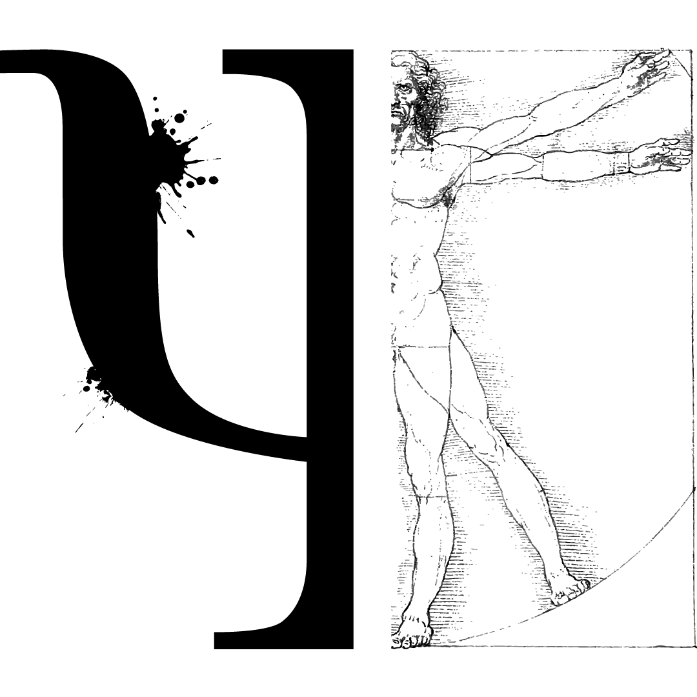
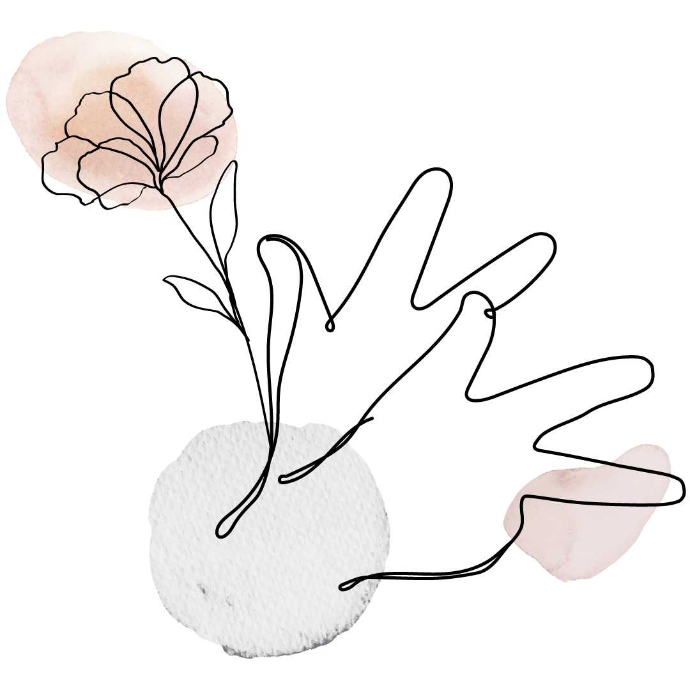
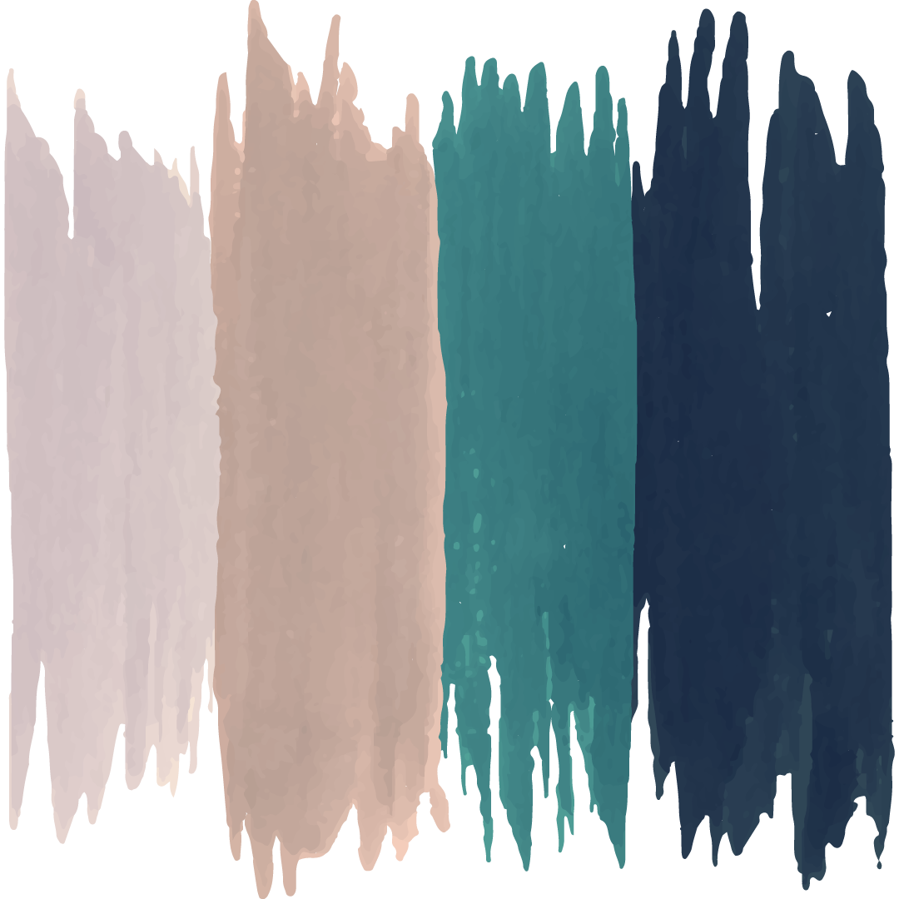

Arquitectura de un proyecto

La PSIQUE
Alma humana
Un concepto procedente de la antigua Grecia, que designaba la fuerza vital de un individuo, unida a su cuerpo en vida y desligada de este tras su muerte.
Así se origina el nombre PSICOLOGIA, ciencia de la mente hererada por el alma, representada con la letra Ψ (Psi).

Las MANOS
Representan a la Lengua de Señas Argentina y de esta manera se intenta incluir múltiples formas de escuchar.
Se escuchan gestos, posiciones corporales, miradas…
Se escuchan palabras habladas y señadas.

Las COLORES
Buscan alcanzar paradójicamente la armonía dentro de las diferencias.
La distribución de los mismos logra que ninguno sea más importante que el otro sino en su lugar genera una IGUALDAD.